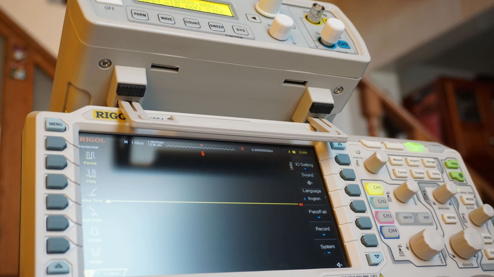

ABOUT THE PROJECT
This project uses a Rigol oscilloscope (DS1054Z)and a FY3224s signal generator to run a frequency response
analysis and creating Bode plots. It's coded in Python and
tested under Ubuntu, but it must works in any Operating System.
PROJECT REPOSITORY (GitHub)
BodePlot-DS1054Z❮RETURN TO PORTFOLIO
